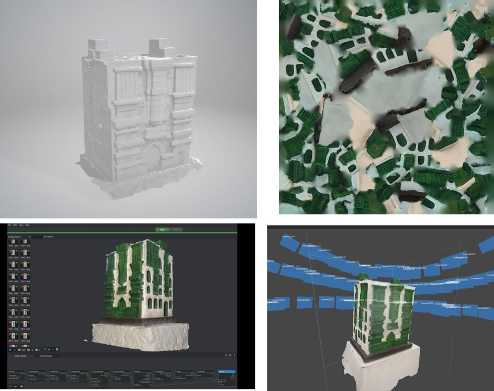
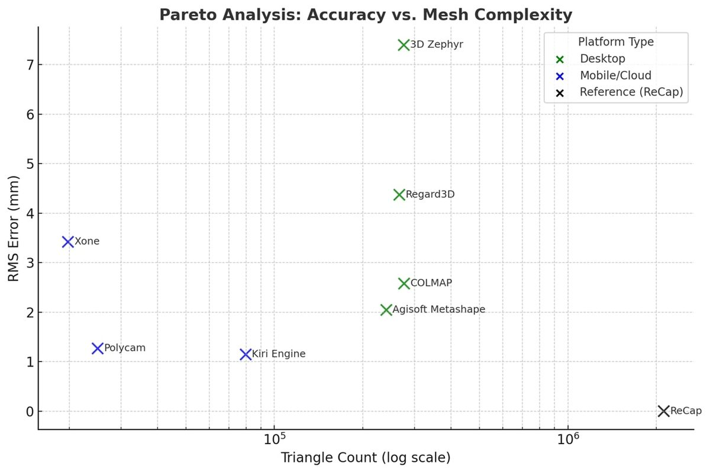
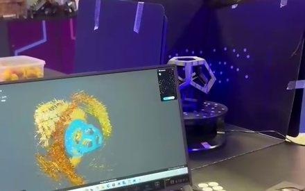

3D reconstruction & architectural documentation
A controlled comparison of open-source reconstruction and texturization platforms, measuring what accessible photogrammetry actually costs in accuracy.



Reliable as-built information is the missing input for most retrofit, restoration and monitoring work. Commercial capture is accurate but slow and expensive; the question the lab asks is what can be achieved with free and open-source tooling and a handheld mobile device.
The study builds an image-based photogrammetry setup around a single standardised architectural model, then runs the same dataset through eight platforms — COLMAP, Meshroom, Agisoft Metashape, 3D Zephyr, Regard3D, Polycam, Kiri Engine and Xone — with Autodesk ReCap as the reference. Each result is measured for RMS error against the reference mesh, triangle count, resolution and processing time.
The outcome is a practical accuracy-versus-complexity map rather than a winner. Mobile and cloud tools reach low RMS error with far lighter meshes; several desktop pipelines produce denser geometry without a matching gain in accuracy. Limitations remain real — data management, computational cost and the training required — but open-source tools are competitive enough to change what documentation is affordable.
The pipeline continues through texturization toward IFC-based digital twins, aimed at fast, low-cost documentation of existing structures.
Alymani, A. & Murugesan, L. (2026). Architectural Documentation Using Open-Source 3D Reconstruction and Texturization Applications. Smart and Sustainable Built Environment (SASBE).